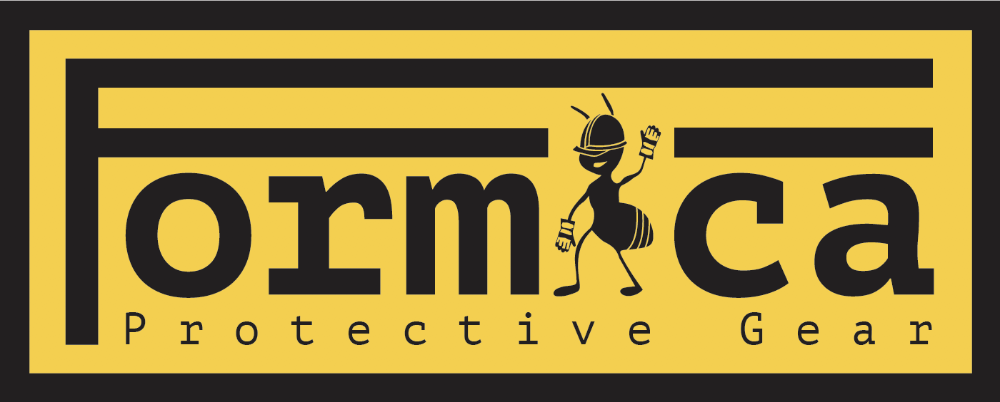

This poster was designed under the guidelines of creating a poster depicting an everyday object and providing information on it. I chose my speaker and decided to depict the different styles of music and expression through different art styles exploding from the speaker. The expository information is subtly inserted in the bottom right corner.

"Achieving the Impossible" is a wordless set of instructions that shows how to use a portal gun to lick your elbow.

This informational poster was designed entirely using Bodoni and was created to give some background information to the iconic typeface.

"Extraction" is a digital composition made up of over 10 different images. I had to partially create the landscape and the spaceship that is abducting the car, along with all of the debris.

This logo was created for a fictitious Protective gear company that produces all its gear using the chitosin and sclerotin found in ants to produce tough and shock-absorbing plastics.
This logo was created for a fictitious Protective gear company that produces all its gear using the chitosin and sclerotin found in ants to produce tough and shock-absorbing plastics.

This is a screenshot of a screen from Sniffout, my self-conceptualized and designed event-finding app. This screen shows the different ways to browse for events nearby. Search by category, use music-recognizing technology, or image search technology to find events near you!

This is a logo I developed for a website service called Pointer. The site allows aspiring graphic designers to find possible paths in the field of design and provides them with motivation and encouragement when the going gets tough.

This is a redesigned New York Times Magazine table of contents. The original issue was published February 11, 2018.